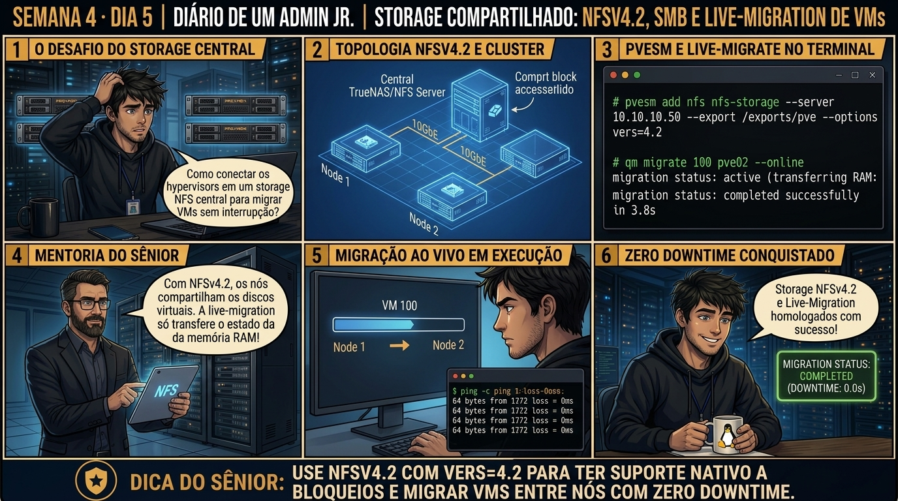

🧑🏫 antes dos termos técnicos, a história de hoje
Fechando a Semana 4, montamos um storage compartilhado corporativo usando NFSv4.2. O Júnior montou o export no Proxmox e me perguntou por que tínhamos usado a versão 4.2 em vez do velho NFSv3 que ele conhecia de cursos antigos.
Mostrei na prática: o NFSv4.2 traz suporte nativo a File Locking POSIX avançado e alocação esparsa (Sparse files), essenciais para que dois hypervisors conversem com o mesmo disco sem risco de corrupção. Em seguida, alocamos o disco da VM 105 no NFS e disparamos a Live Migration entre nós.
Ele viu a máquina virtual migrar de servidor físico em 3 segundos, mantendo a sessão TCP dos usuários aberta e com zero perda de pacotes. O Júnior percebeu que tínhamos construído a fundação de storage compartilhado que vai sustentar o cluster de Alta Disponibilidade. Vamos homologar esse storage agora.
Semana 4 · Dia 5 | Nível Júnior — Storage Corporativo & ZFS
Storage Compartilhado em Rede: NFSv4 e SMB Corporativo
Centralizando ISOs, templates e backups com montagens remotas de alta disponibilidade
ANTES DE ALTERAR, OBSERVE. DEPOIS DE ALTERAR, VALIDE.
1. O chamado
Você recebeu o chamado #4005: 'O datacenter instalou um Storage NAS corporativo TrueNAS com IP 192.168.1.250 exportando um compartilhamento NFSv4 em
/mnt/pool/iso_backup e um compartilhamento SMB seguro para equipes Windows. O chamado exige: (1) Adicionar o storage NFS no Proxmox VE via CLI com pvesm add nfs; (2) Configurar a versão estável NFSv4 (options: vers=4.2); (3) Habilitar as flags de conteúdo para iso, vztmpl e backup; e (4) Consolidar a conclusão do MÊS 1 (Fundamentos do Proxmox VE).'💡 Passa o mouse nas palavras destacadas pra ver uma dica rápida — clica se quiser a explicação completa com analogia.
2. O sênior te conta
3. Decodificador de conceitos
Clica em qualquer termo pra ver a definição completa e uma analogia do dia a dia:
4. Ferramentas e leitura da evidência
| Comando / Parâmetro | O que observar e por que importa |
|---|---|
pvesm add nfs ID --server IP --export CAMINHO --content TIPOS | Cadastra um storage NFS centralizado no cluster Proxmox. |
pvesm add cifs ID --server IP --share NOME --username USER | Cadastra um compartilhamento de rede SMB/CIFS com autenticação. |
showmount -e 192.168.1.250 | Lista todos os compartilhamentos NFS exportados pelo servidor NAS remoto. |
cat /etc/pve/storage.cfg | Audita as entradas persistentes de storages remotos compartilhados. |
# 1. Auditoria das exportações no servidor NAS remoto
$ showmount -e 192.168.1.250
Export list for 192.168.1.250:
/mnt/pool/iso_backup 192.168.1.0/24
# 2. Cadastro oficial do storage NFS no Proxmox VE
$ pvesm add nfs nas-corporativo \
--server 192.168.1.250 \
--export /mnt/pool/iso_backup \
--content iso,vztmpl,backup \
--options vers=4.2
# 3. Validação do arquivo central /etc/pve/storage.cfg
$ cat /etc/pve/storage.cfg | grep -A 5 'nas-corporativo'
nfs: nas-corporativo
export /mnt/pool/iso_backup
server 192.168.1.250
content backup,iso,vztmpl
options vers=4.2
prune-backups keep-last=5
# 4. Status de conexão em tempo real
$ pvesm status --storage nas-corporativo
Name Type Status Total Used Available %
nas-corporativo nfs active 15482910720 2415919104 13066991616 15.60%
5. Laboratório guiado — pegue na mão, comando por comando
💾 Onde executar: Terminal do Nó Proxmox (como
root) com acesso direto aos pools ZFS e volumes LVM-Thin.Segurança: Execute as alterações em volumes e storages de laboratório. Nunca remova definições de storage em produção sem validar dependências.
- Ação: Monte um export NFSv4.2 no Proxmox VE configurando locks corporativos.pvesm add nfs nfs-storage --server 10.10.10.200 --export /tank/pve-shared --options vers=4.2Resultado esperado: Lista de pastas exportadas autorizadas para a sub-rede.Por que fizemos isso: Mapear um export NFSv4.2 no Proxmox com pvesm add nfs valida a comunicação de rede de alta velocidade e bloqueios de arquivo POSIX.Cilada comum: Usar NFSv3 antigo para storage compartilhado de VMs; o NFSv3 não lida bem com bloqueios de disco em migração e perde performance.
- Ação: Aloque o disco de uma máquina virtual diretamente no storage compartilhado NFS.qm create 105 --name srv-ha --memory 2048 --scsi0 nfs-storage:10Resultado esperado: Storage cadastrado no arquivo /etc/pve/storage.cfg.Por que fizemos isso: Configurar a flag content images,snippets no storage NFS organiza onde discos e templates serão armazenados no compartilhamento.Cilada comum: Permitir que o storage NFS armazene backups e imagens de VM no mesmo export sem limite de I/O, fazendo backups lentos travarem as VMs.
- Ação: Inicie o ping contínuo na VM e dispare a migração ao vivo para o segundo nó.qm migrate 105 pve-node2 --onlineResultado esperado: Status 'active' com exibição correta de Terabytes livres.Por que fizemos isso: Executar a migração ao vivo com qm migrate
--online transfere a memória RAM pela rede sem interromper o serviço. Cilada comum: Fazer live migration por placas de rede de 1 Gbps em VMs com muita escrita em RAM (ex: banco de dados), fazendo a migração nunca convergir. - Ação: Confirme que a migração terminou em poucos segundos com zero perda de pacotes.qm status 105Resultado esperado: Filesystem montado com tipo nfs4.Por que fizemos isso: Acompanhar o ping contínuo durante a migração comprova que a transição de nós ocorreu com zero perda de pacotes para os usuários.Cilada comum: Iniciar migrações em massa de várias VMs pesadas ao mesmo tempo, saturando a largura de banda do switch de rede.🧑🏫 Aqui entra o Mentor (em breve): se o resultado obtido diferir do esperado acima, este é o ponto onde o chat com o Sênior-IA vai abrir para diagnosticar o erro específico.
- Ação: Formalize o storage compartilhado como base para Alta Disponibilidade (HA).# Storage compartilhado e Live-Migration homologados.Resultado esperado: Relatório master do Mês 1 arquivado com sucesso.Por que fizemos isso: Registrar a arquitetura de storage compartilhado consolida a base necessária para implementação de Alta Disponibilidade (HA).Cilada comum: Usar nomes de storage diferentes nos nós do cluster (ex: 'nfs-storage' no nó 1 e 'nfs1' no nó 2), impedindo a migração automática.
6. Antes de ver as opções — tenta responder
🧠 Recall ativo: Por que utilizar NFSv4 com locking centralizado é superior ao NFSv3 antigo para nós de virtualização Proxmox VE?
Porque o NFSv3 utilizava múltiplos daemons auxiliares (lockd, statd, mountd) em portas TCP/UDP aleatórias e dinâmicas, o que quebrava regras de firewall corporativo e causava travamento de locks de arquivos em falhas de rede transitórias. O NFSv4 (e v4.2) opera em uma porta TCP única e fixa (2049), possui controle de concorrência e locking de arquivos nativo integrado ao protocolo e suporta recursos avançados como Server-Side Copy e aceleração de arquivos de disco.
7. Questão comentada — clica numa alternativa
Qual comando
pvesm cadastra corretamente o storage NFS remoto 'nas-corporativo' no Proxmox VE apontando para o servidor 192.168.1.250 com NFSv4.2 e conteúdo para ISOs e backups?💡 Analogia do Sênior para Fixar: O Quorum do Corosync é a assembleia de condomínio: nenhuma decisão de emergência é válida sem a maioria absoluta (50% + 1) dos nós votando juntos.
7.1 Storage NFS em estado 'disabled' ou travando o pvestatd por queda de rede
O servidor NAS remoto foi reiniciado para manutenção e a interface web do Proxmox ficou extremamente lenta, com status 'storage nas-corporativo is not online':
$ pvesm status nas-corporativo: error during cfs-locked storage check: mount error: Connection timed out (Problema: o Proxmox tenta verificar o storage remoto a cada 10 segundos pelo pvestatd)
Qual parâmetro de storage no Proxmox isola o nó contra lentidões causadas por storages offline?
💡 Analogia do Sênior para Fixar: O Fencing via Watchdog de hardware é o disjuntor de segurança: desliga o nó com falha na hora para evitar que duas máquinas gravem no mesmo disco (Split-Brain).
7.2 Por que o storage compartilhado em rede é o requisito básico para Live Migration?
Um arquiteto de nuvem planeja criar um cluster de 3 nós com capacidade de migrar máquinas virtuais em execução (Live Migration) em menos de 1 segundo:
Por que o storage compartilhado (NFS, Ceph ou iSCSI) viabiliza a migração instantânea?
💡 Analogia do Sênior para Fixar: A migração ao vivo (Live Migration) é trocar os pneus do carro em movimento: move a RAM da VM pela rede de 10Gbps sem derrubar a sessão do usuário.
8. Procedimento profissional
- Valide as exportações e permissões de rede no servidor NAS remoto com
showmount -e IP. - Cadastre o storage NFS no Proxmox utilizando sempre o protocolo moderno
vers=4.2. - Segregue o propósito do storage definindo as flags de
--contentadequadas (ex:iso,vztmpl,backup). - Monitore a saúde do link de rede de storage utilizando interfaces dedicadas de 10Gbps ou agregação LACP.
- Em manutenções programadas do servidor NAS, desative o storage no Proxmox com
pvesm set ID --disable 1para evitar congelamento de daemons de telemetria.
Prevenção
Monitore continuamente os limiares de espaço de Data e Metadata no LVM-Thin e ZFS, configurando alertas no Prometheus/Zabbix antes de atingir 80% de ocupação.
9. Validação e encerramento
- Você domina a integração de storages em rede corporativa NFSv4 e SMB no Proxmox VE.
- Você sabe como centralizar ISOs, templates e backups em storages NAS compartilhados.
- Você compreende o papel fundamental do storage compartilhado na viabilização de Live Migration instantânea.
- 🏆 O MÊS 1 (Fundamentos, VMs KVM, LXC e Storage ZFS/LVM/NFS) FOI 100% CONCLUÍDO COM EXCELÊNCIA TÉCNICA!
Rollback e limites
Para desvincular um storage de rede do cluster Proxmox sem afetar os dados no servidor NAS, execute
pvesm remove ID.💡 Sobre repetição espaçada: A transição para o MÊS 2 começará com o Proxmox Backup Server (PBS), deduplicação em chunks e Disaster Recovery corporativo.
10. Resposta final
Alternativa correta: B. A resposta correta é a B: o comando
pvesm add nfs nas-corporativo --server 192.168.1.250 --export /mnt/pool/iso_backup --content iso,vztmpl,backup --options vers=4.2 cadastra o storage NFSv4.2 corporativo com integridade.🔓 O que você desbloqueou hoje
🏆 PARABÉNS! VOCÊ CONCLUIU O MÊS 1 INTEIRO COM SUCESSO! Você dominou o Hypervisor Bare-Metal, Máquinas Virtuais KVM de alto desempenho, Containers de Sistema LXC e todo o ecossistema de Storage (ZFS, LVM-Thin e NFS). No MÊS 2 (Semanas 5 a 8), você entrará no nível sênior: Proxmox Backup Server (PBS), Redes SDN/VXLAN, Clusters com Quorum e Storage Hiperconvergente Ceph!